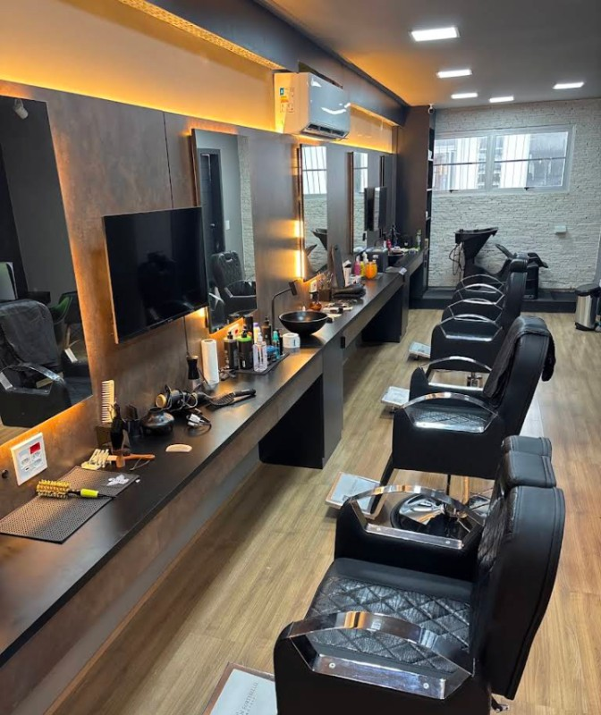
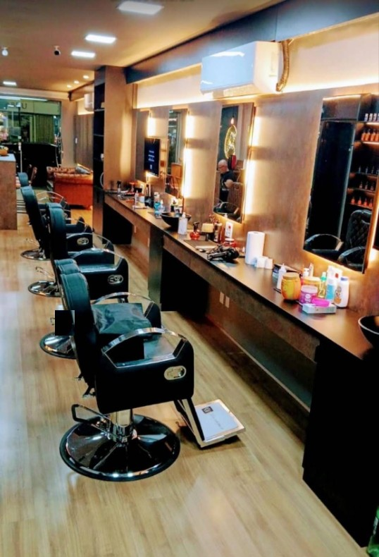
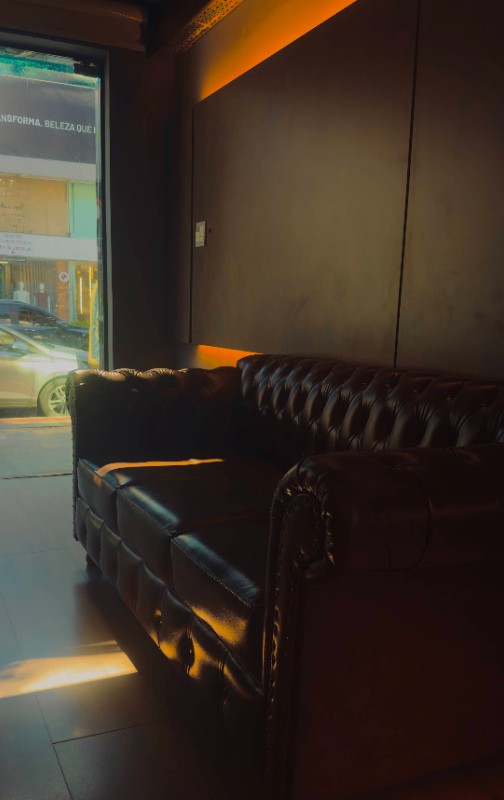
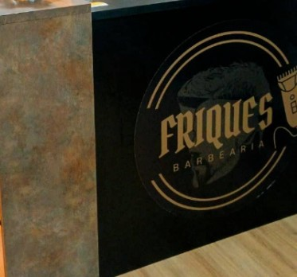
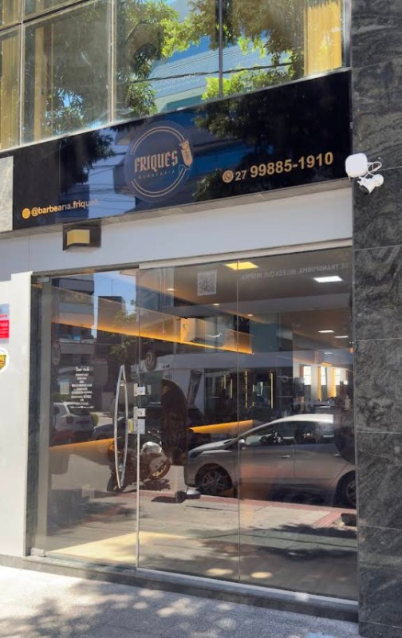

Barbearia open bar · Jardim da Penha
Estilo &confiança.
Corte e barba com hora marcada, e bebida por conta da casa enquanto você é atendido.
5,0461 avaliações no Google

Jardim da Penha · Vitória03A casa
Por dentro da Friques




5,0nota no Google
461avaliações
3.299seguidores no Instagram
04Visite
Chega mais.
Segunda a sábado
| Segunda a sexta | 09h às 20h |
| Sábado | 08h às 17h |
| Domingo | Fechado |
Jardim da Penha · Vitória, ES